2015年上半年度，信用宝平台总成交额5.53亿元，共帮助贷款人成功贷款5,084笔。
目前，共有2,391位投资人活跃在信用宝平台，整体平均投资年化收益率达10.65%，共为投资人获得4,801万元收益。
公司在大连、北京、天津、石家庄、洛阳、沧州、厦门、淄博、扬州、成都、上海、福州、郑州、南昌、沈阳、许昌、西安、南阳、包头、深圳、南京、济南22个城市开设了服务网点。
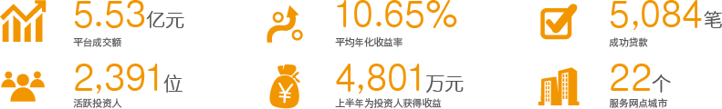 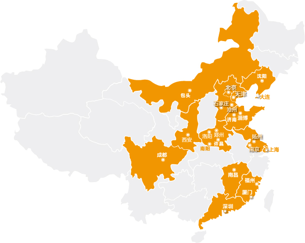公司任职人数
截至2015年6月，公司员工人数从2014年底的1055人增长至1130人。
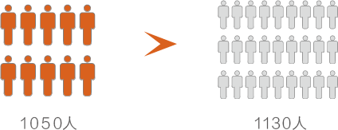公司的员工来自于国内外大型知名企业。
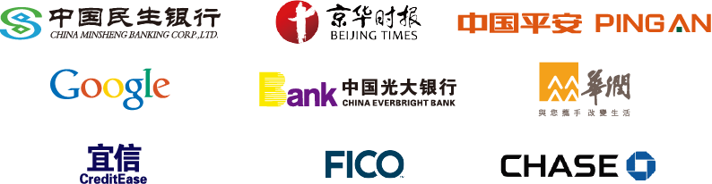公司重视人才培养和引进
公司本科以上员工占到57%以上，其中博士和硕士人数共占5%。
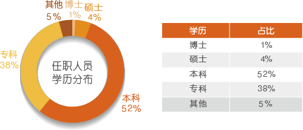公司拥有优秀的合作伙伴。
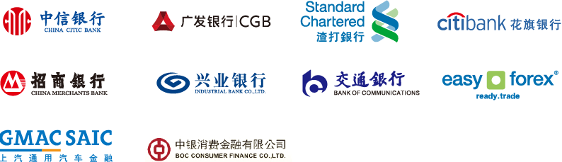2015年上半年，经营类产品占全部贷款的26%，面向对象为经营主体法人或持股20%以上股东，为中小企业发展提供支持。
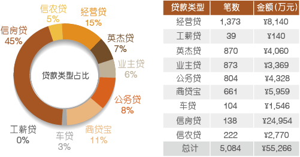2015年上半年，信用宝推荐的投资项目，金额在10万元以下的项目数，占比高达90%，金额较低，风险可控。
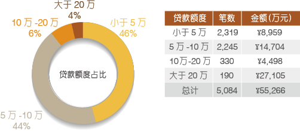2015年上半年，12个月及以下的短期贷款占到全部贷款的62%，平台整体贷款流动率保持非常高的水平。
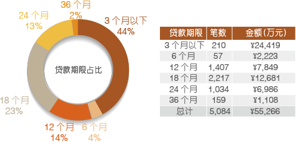2015年上半年，贷款人年龄主要集中在26-45岁的中青年，此阶段正处于事业的成长期，还款能力较强。
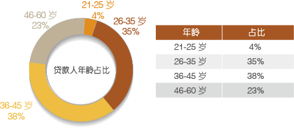投资人主要集中于华东、东北、沿海及经济发达地区。
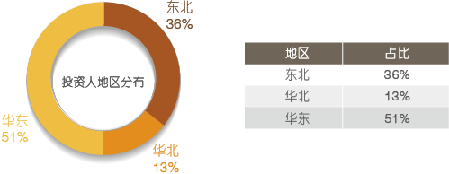贷款人主要来自于华中、华东等地。
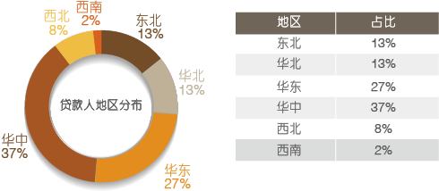通过信用宝的平台作用，有效实现了资金的区域流动和优化配置，在满足有需要的人借款需求的同时，帮助投资人实现资本的增值。
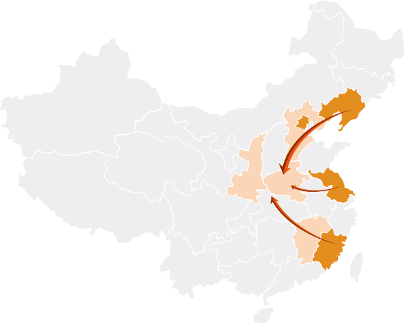